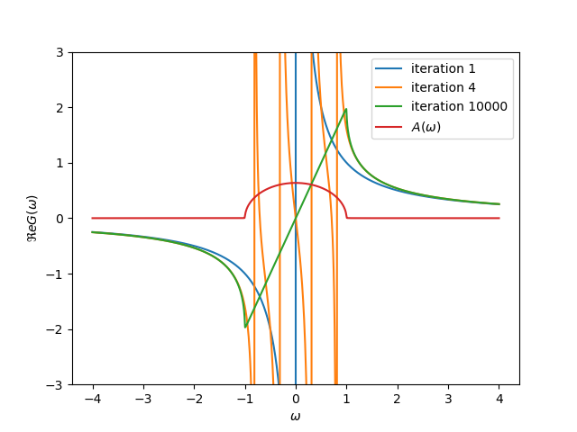

Bethe lattice semi-elliptical DOS¶
The Bethe lattice has a simple form of the self-consistency. This is solved by iteration where introducing the poles in the Green function to recover such density of states.
import numpy as np
import matplotlib.pyplot as plt
omega = 1e-3j + np.linspace(-4, 4, 800)
gf_w = np.zeros_like(omega)
t = 0.5
for i in range(1, int(1e4 + 1)):
gf_w = 1 / (omega - t**2 * gf_w)
if i in [1, 4, 10000]:
plt.plot(omega.real, gf_w.real, label='iteration ' + str(i))
plt.plot(omega.real, -gf_w.imag / np.pi, label=r'$A(\omega)$')
plt.legend(loc=0)
plt.ylim([-3, 3])
plt.xlabel(r'$\omega$')
plt.ylabel(r'$\Re e G(\omega)$')
Total running time of the script: ( 0 minutes 0.402 seconds)